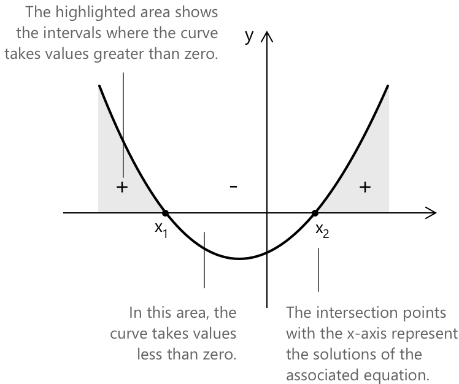
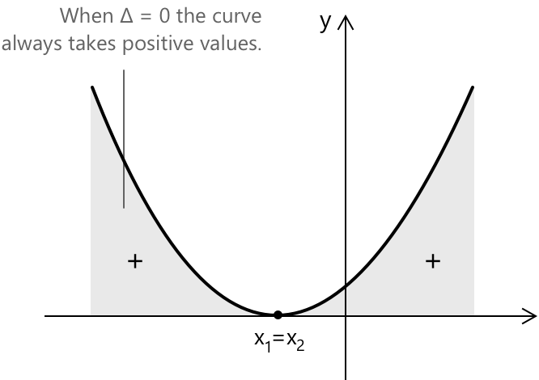
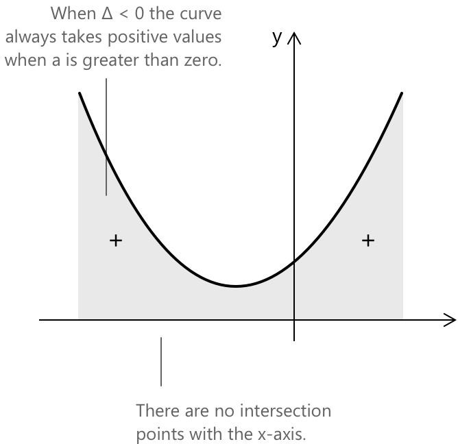
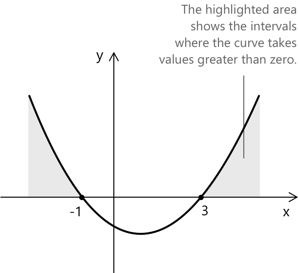
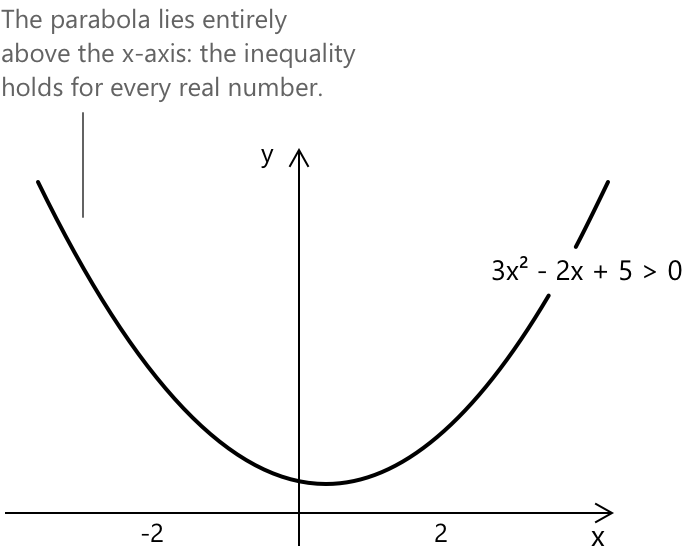

Квадратні нерівності
Що таке квадратні нерівності?
Квадратна нерівність або нерівність другого степеня — це нерівність з поліномом другого степеня від однієї змінної. Стандартна форма квадратної нерівності має таку ж організацію доданків, як і квадратне рівняння, але замість знака рівності використовуються знаки \( > \), \( < \), \( \geq \) або \( \leq \).
Квадратна нерівність має вигляд:
\[ax^2 + bx + c \gt 0 \quad \text{де} \quad a \neq 0\]
- Коефіцієнти \(a\), \(b\) та \(c\) є сталими, а \(x\) представляє змінну.
- \(a\) — це коефіцієнт квадратичного члена \(x^2\), \(b\) — коефіцієнт лінійного члена \(x\), а \(c\) — вільний член (стала).
- Коли \(a\) дорівнює нулю, рівняння вироджається в лінійне рівняння \(bx + c = 0\) або в стале рівняння, залежно від значень \(b\) та \(c\).
Квадратні нерівності, що не представлені у стандартній формі, можна перетворити, перенісши всі доданки в один бік, щоб праворуч залишився нуль. Наприклад, нерівність:
\[x^2 + 3 < 2x + 1\]
переписується як \(x^2 – 2x + 2 < 0\) перед застосуванням методів, описаних у цьому розділі.
Природа розв'язків квадратної нерівності
Розв'язання квадратної нерівності зазвичай виражається як проміжок значень, що задовольняють нерівність, а не як одне конкретне значення. Залежно від знака квадратичного виразу та природи його коренів, розв'язання може складатися з:
- відкритого або закритого інтервалу (неперервної множини значень),
- двох окремих інтервалів,
- одного значення, у випадках, коли нерівність задоволена лише в одній точці,
- або розв'язків немає, якщо нерівність ніколи не є правильною для будь-якого дійсного числа.
Ці результати залежать від визначника (дискримінанта) відповідного квадратного рівняння та напрямку знака нерівності \(\gt, \lt \). Розуміння цієї структури є важливим для інтерпретації графічної поведінки параболи та визначення того, які області числової прямімої задовольняють умову.
Метод розв'язання
Першим кроком у розв'язанні квадратної нерівності є пошук розв'язків відповідного рівняння другого степеня. Потім, виходячи зі знака нерівності, можна визначити проміжок значень, що її задовольняють. Існує два широко використовуваних методи отримання розв'язків квадратного рівняння: формула коренів квадратного рівняння та метод розкладання на множники.
Формула квадратного рівняння дозволяє знайти розв'язки будь-якого квадратного рівняння простим і систематичним способом, тоді як метод розкладання на множники передбачає розкладання квадратичного виразу для отримання його розв'язків. Обидва методи є практичними та широко використовуються для розв'язування квадратних рівнянь.
Дано нерівність у стандартній формі \(ax^2 +bx +c \gt 0\) або \(ax^2 +bx +c \lt 0\), перетворимо її на відповідне рівняння, прирівнявши поліном до нуля. Таким чином, ми отримаємо рівняння другого степеня у вигляді:
\[ax^2 +bx +c = 0 \]
Дійсні корені відповідного рівняння розбивають дійсну пряму на підінтервали, на яких квадратичний поліном зберігає постійний знак. Визначивши знак виразу на кожному з цих інтервалів, ми можемо знайти значення, що задовольняють нерівність.
Часто корисно розуміти, як змінюється поведінка квадратичного виразу, коли коефіцієнти залежать від параметра. У таких випадках знак квадратичного виразу визначається дискримінантом як функцією параметра, і інтервали позитивності або негативності можуть відповідно зміщуватися. Повне обговорення цієї теми можна знайти в окремому розділі про квадратні рівняння з параметрами.
Розв'язання при \(\Delta > 0\)
Як було зазначено раніше, квадратні нерівності, на відміну від рівнянь, зазвичай мають множину розв'язків, що складається з проміжку значень, який визначається знаком нерівності. За умови \(\Delta > 0\) (дискримінант квадратного рівняння), відповідне рівняння має два різні дійсні корені \(x_1\) та \(x_2\). Припустимо для спрощення, що \(x_1 < x_2\), тоді маємо наступні випадки:
Коли нерівність має вигляд \(ax^2+bx+c \geq 0\) або \(ax^2+bx+c > 0\):
\[ \begin{align} x \leq x_1 \lor x \geq x_2 &\quad \text{для} \quad ax^2+bx+c \geq 0 \\[0.5em] x < x_1 \lor x > x_2 &\quad \text{для} \quad ax^2+bx+c > 0 \end{align} \]
Коли нерівність має вигляд \(ax^2+bx+c \leq 0\) або \(ax^2+bx+c < 0\):
\[ \begin{align} x_1 \leq x \leq x_2 &\quad \text{для} \quad ax^2+bx+c \leq 0 \\[0.5em] x_1 < x < x_2 &\quad \text{для} \quad ax^2+bx+c < 0 \end{align} \]
З геометричної точки зору, пам'ятаючи, що поліном другого степеня представляє собою параболу, ми отримаємо наступні інтервали:

Якщо не зазначено інше, припущення \(a > 0\) зберігається на всій цій сторінці. Якщо \(a < 0\), парабола відкривається вниз, і множини розв'язків у наступних розділах змінюються на протилежні: вирази, що є додатними для \(a > 0\), стають від'ємними для \(a < 0\), і навпаки.
Розв'язання при \(\Delta = 0\)
Коли \(\Delta = 0\), відповідне рівняння має один дійсний корінь кратності два, що позначається як \(x_1 = x_2\). Маємо наступні випадки:
Коли нерівність має вигляд \(ax^2+bx+c \geq 0\) або \(ax^2+bx+c > 0\):
\[ \begin{align} \forall , x &\quad \text{для} \quad ax^2+bx+c \geq 0 \\[0.5em] \forall , x \neq x_1 &\quad \text{для} \quad ax^2+bx+c > 0 \end{align} \]
Коли нерівність має вигляд \(ax^2+bx+c \leq 0\) або \(ax^2+bx+c < 0\):
\[ \begin{align} x = x_1 &\quad \text{для} \quad ax^2+bx+c \leq 0 \\[0.5em] \not\exists , x &\quad \text{для} \quad ax^2+bx+c < 0 \end{align} \]
З геометричної точки зору, коли \(\Delta = 0\), крива завжди набуває додатних значень (припускаючи, що коефіцієнт \(a\) більший за нуль). Єдина точка, де крива торкається осі x, знаходиться у подвійному корені, де значення виразу дорівнює нулю \(x_1 = x_2\).

Розв'язання при \(\Delta \lt 0\)
За умови \( \Delta < 0 \), відповідне квадратне рівняння має комплексні корені. Отже, парабола не перетинає вісь x. Виходячи зі знака нерівності та знака старшого коефіцієнта ( a ), ми розрізняємо наступні випадки:
-
Коли нерівність має вигляд \(ax^2+bx+c \geq 0 \) або \(ax^2+bx+c \gt 0 \), в обох випадках маємо: \(\forall \, x\)
-
Коли нерівність має вигляд \(ax^2+bx+c \leq 0 \) або \(ax^2+bx+c \lt 0 \), в обох випадках маємо: \(\not\exists \; x\)

Коли коефіцієнт \( a \) додатний, гілки параболи спрямовані вгору, тоді як коли \( a \) від'ємний, гілки спрямовані вниз. У прикладах ми припустили, що вирази були переписані у вигляді \( ax^2 + bx + c > 0 \) з додатним \( a \), що призвело до параболи, відкритії вгору.
Приклад 1
Розв'яжіть квадратну нерівність: \[2x^2 +5x – 3 \gt 0 \]
Як показано вище, першим основним кроком є перехід до відповідного квадратного рівняння шляхом прирівнювання полінома до нуля:
\[2x^2+5x-3 = 0 \]
Тепер ми використовуємо формулу коренів квадратного рівняння, щоб знайти розв'язання рівняння.
\[ \begin{align} x_{1,2} &= \frac{-5 \pm \sqrt{5^2 -4\cdot(2)\cdot(-3)}}{2\cdot 2} \\[1em] &= \frac{-5 \pm \sqrt{25 +24}}{4} \\[1em] &= \frac{-5 \pm 7}{4} \\[1em] \end{align}\]
Отримаємо: \[x_1 = \frac{2}{4} \to \frac{1}{2} \] \[x_2 = - \frac{12}{4} \to -3 \]
Тепер визначимо область значень розв'язків нерівності. Ми можемо використовувати графічний метод, щоб визначити її візуально. Нерівність має вигляд \(ax^2 +bx +c \gt 0\). Маємо:
| \[ -3\] | \[ \frac{1}{2}\] | ||
|---|---|---|---|
Розв'язанням нерівності є: \[ x \lt -3 \;\lor\; x \gt \frac{1}{2} \quad\text{або}\quad x \in \left(-\infty, -3\right) \cup \left(\frac{1}{2}, +\infty\right) \]
Якби нерівність мала вигляд \(2x^2 +5x - 3 \lt 0\), ми б мали:
| \[ -3\] | \[ \frac{1}{2}\] | ||
|---|---|---|---|
У цьому випадку область значень, яку слід розглянути, становить \(-3 \lt x \lt \frac{1}{2}\), і розв'язанням рівняння є \(x \in \left(-3,\frac{1}{2}\right)\).
Аналіз знаків
Іншим корисним методом розв'язування нерівностей є аналіз знаків. Цей метод використовується для визначення інтервалів, на яких заданий вираз є додатним, від'ємним або дорівнює нулю. Наприклад, розглянемо наступну нерівність:
\[x^2 – 2x – 3 > 0 \]
Поліном можна розкласти на множники наступним чином:
\[ (x – 3)(x + 1) > 0 \]
Згідно з правилом знаків добутку, цей поліном, розкладений на добуток двох множників, є додатним, коли виконується наступна умова:
\[ \begin{align} &x - 3 > 0 \rightarrow x > 3 \\[0.5em] &x + 1 >0 \rightarrow x > -1 \end{align} \]
Тепер ми відобразимо значення на числовій прямій і позначимо відповідні інтервали додатності та від'ємності. Маємо:
| \[ -1 \] | \[3 \] | ||
|---|---|---|---|
| \[ x + 1 > 0 \] | \( \boldsymbol{-} \) | \( \boldsymbol{+} \) | \( \boldsymbol{+} \) |
| \[ x -3 > 0 \] | \( \boldsymbol{-} \) | \( \boldsymbol{-} \) | \( \boldsymbol{+} \) |
| \[ (x + 1)(x – 3) > 0 \] | \( \boldsymbol{+} \) | \( \boldsymbol{-} \) | \( \boldsymbol{+} \) |
Добуток двох множників є додатним, коли обидва множники мають однаковий знак, і від'ємним, коли вони мають протилежні знаки; повний опис цього методу доступний у відповідному розділі про аналіз знаків.
В останньому рядку ми вставляємо результат добутку знаків між знаком з 1-го рядка та знаком з 2-го рядка для кожного проміжку. Проміжки, що задовольняють нашу початкову нерівність:
\[x < -1 \quad \text{та} \quad x > 3 \]
У позначеннях проміжків множина розв'язків така:
\[(-\infty, -1) \cup (3, +\infty)\]
Побудувавши криву на осях, отримаємо:

Таким чином, ми розв'язали нерівність за допомогою таблиці знаків, не вдаючись до розв'язання відповідного квадратного рівняння за допомогою формули коренів квадратного рівняння, що призвело б до того самого результату.
Приклад 2
Розглянемо наступну нерівність, де дискримінант відіграє вирішальну роль у визначенні розв'язання: \[3x^2 - 2x + 5 > 0\]
Дискримінант відповідного рівняння \(3x^2 - 2x + 5 = 0\) обчислюється наступним чином: \[\Delta = (-2)^2 – 4 \cdot 3 \cdot 5 = 4 – 60 = -56\]
Оскільки \(\Delta < 0\) і провідний коефіцієнт \(a = 3 > 0\), парабола відкривається вгору і не перетинає вісь x.

Як результат, квадратний вираз залишається строго додатним для всіх дійсних значень \(x\).
Розв'язання: \[\forall \, x \in \mathbb{R}\]
Вибрана література
- Stony Brook University. Quadratic Inequalities
- University of Illinois at Chicago, J. Baldwin. Solving Inequalities and Quadratics
- University of Chicago M. Hidegkuti. Quadratic Inequalities